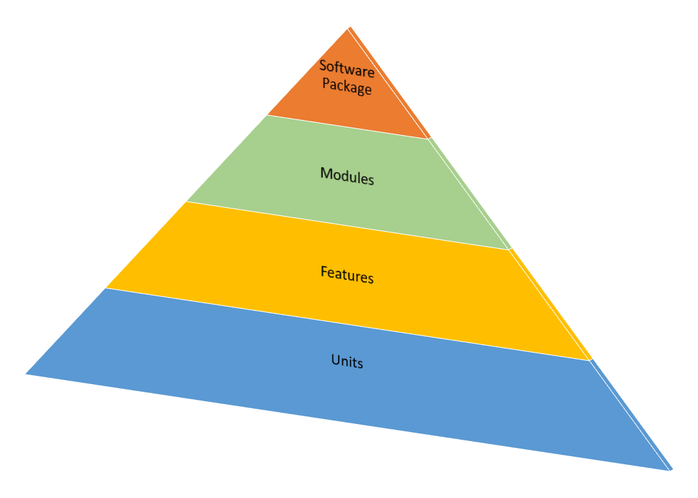

Conversations
The main feature of Behaviour Driven Development are the conversations between the development team and the business. The business telling the developers they want X and then receiving something in 4 weeks is not BDD. You can have all the tools you want, cucumber, scrum meetings, Jira, Kanban boards but if you are not having the conversations then BDD will not work.
Equally or possibly more important is who is having the conversations. If its just the technical team (Developers and Testers) that's not BDD. The business users have to be included because the business users will be driving the development.If the Businness won’t interact with the technical team becuase they are too busy then BDD is not the right approach. They should probably look at something else.
BDD uses simple plain english to describe the behaviour of the software, so that anybody, even if they are not technical can take part in the development. This draws in the business stakeholders and users to the project and helps the development team understand and explore the business's requirements. Its a simple idea but is very powerful. When we decide we need software, we describe it a very high level. For example "I want a sofware package that handles all my online transactions." So how do we get from having nothing to that high level of completion?

How do we do it - Yes, you got it, conversations. Thousands of them. Each one is documented, as a unit. The code written and then tested. A series of conversations makes up a feature, a series of features make up a module and a series of modules make up the software package. The conversations detail the requirements and the test, which is defined as done when the test has passed.
The conversations reduce the effects and risk of ambiguity
Ambiguity - it happens all the time. Remember the Two Ronnies "Four candles, no Fork handles" sketch. The customer and the shopkeeper only overcame their misunderstandings when they could see the item. That's what BDD does it shows the customer the requirement in context. The customer can say, "Yes, thats correct" or give further advice if its not.
Press to watch the video.
Wherever you start, surely its preferable to spending time writing documentation that will be misunderstood by the developers, then spend time refactoring for the misinterpretation. Instead, when you realise you need software just start a project with BDD. You'll have software quicker, it will be correct quicker and it will grow organically. You're only comitted to the end goal not the exact path to get there. Half way through the project you may realise the business needs to go in a different direction to catch a change in the market. You are now proactive not reactive.
We are now ready to talk about Cucumber and Gherkin, the tools used in BDD.
To go to the next section select the forward arrow at the top of the page.